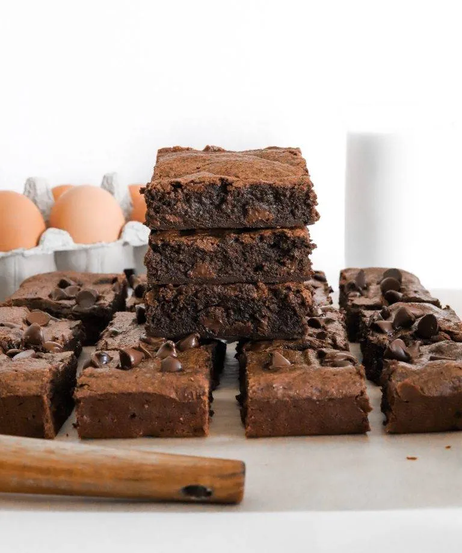
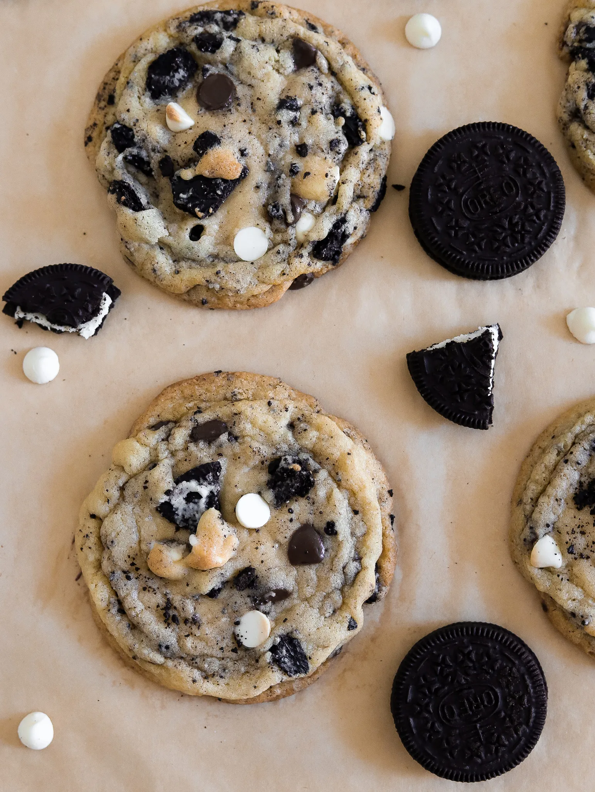
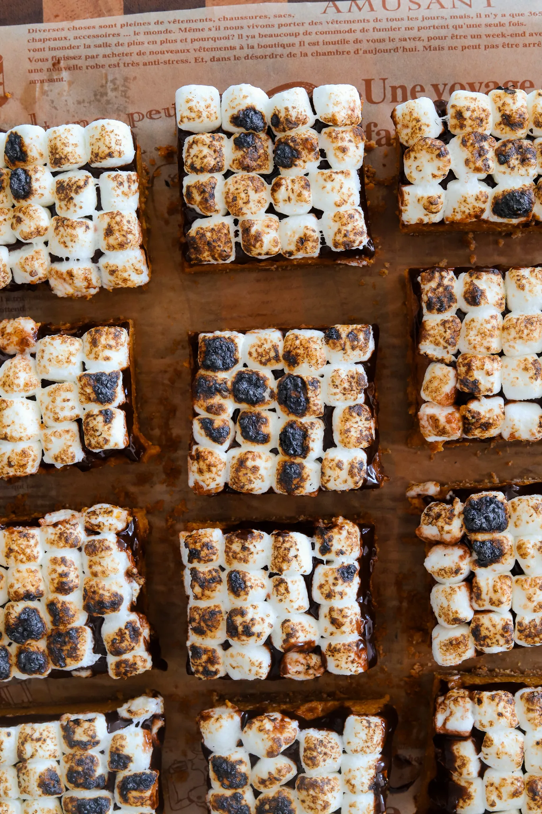

Cookbook: Fav Recipes
THE PERFECT FUDGEY BROWNIES
PREP TIME: 30 MIN
COOK TIME: 30 MIN
TOTAL TIME: 1 HR

INGREDIENTS
- 1/2 cup Challenge Unsalted Butter melted
- 1 1/4 cup granulated white sugar
- 1/4 cup light brown sugar
- 1/2 teaspoon salt
- 2/3 cup unsweetened cocoa powder
- 1 teaspoon espresso powder
- 1 teaspoon vanilla extract
- 2 tablespoons vegetable oil
- 2 tablespoons heavy cream
- 2 large eggs
- 3/4 cup all purpose flour
- 1/2 cup semi sweet or milk chocolate chips
INSTRUCTIONS
-
Whisk together the unsalted butter, granulated white sugar,
and light brown sugar until smooth and fluffy.
-
Then add the unsweetened cocoa powder, salt, espresso powder,
vanilla extract, vegetable oil, and heavy cream.
Whisk again and then pop in the microwave for 30 seconds.
It shouldn't be hot, just warm. Whisk together to dissolve
the sugar and cocoa powder.
-
Once smooth, add the eggs and whisk really well until combined.
Beat for about a minute to help fluff up the batter.
-
Now add the all purpose flour and mix until
you have a thick batter consistency.
-
Finally, mix in the chocolate chips! You can mix them into
the batter or another option is to sprinkle them on top
in the pan.
-
Transfer the batter to a 9x9 tray that's been lined with
parchment paper. Smooth the top with a rubber spatula and pop
in the oven at 350°F to bake for about 30 to 35 minutes.
-
Once they're out of the oven, allow them to cool down
for about 25 minutes until set. Then cut them into individual
pieces to enjoy!
COOKIES AND CREAM COOKIES
PREP TIME:45 MINUTES
COOK TIME: 30 MINUTES
TOTAL TIME: 1 HOUR 15 MINUTES
YIELDS: 12 COOKIES

INGREDIENTS
- 1 3/4 cups all purpose flour
- 1 teaspoon baking soda
- ½ teaspoon salt
- 2 tablespoons cornstarch
- 1 ½ stick unsalted butter room
- temperature (¾ cup)
- ¾ cup white sugar
- ½ cup light brown sugar
- 1 whole large egg + 1 yolk
- 1 teaspoon vanilla extract
- 1/3 cup white chocolate chips
- 1/3 cup semi sweet chocolate chips
- 6 Oreos, chopped
INSTRUCTIONS
-
In a small bowl, whisk together all purpose flour, baking soda,
salt, and cornstarch.
-
In a mixing bowl, add the room temperature butter, brown sugar,
and white sugar. Beat for about a minute or two
until light and fluffy using a hand mixer or stand mixer
fitted with a paddle attachment.
-
Add the egg, egg yolk, and vanilla extract. Beat again
until smooth. Scrape the sides of the bowl as necessary.
-
Add the dry to the wet and combine until a dough forms.
-
Mix in the Oreos, semi sweet chocolate chips, and
white chocolate chips. Then let the dough rest at
room temperature for 20 minutes.
-
Preheat oven to 350°F.
-
Line a sheet pan with parchment paper.
-
Scoop out portions of the dough about the size of 1/4 to
1/3 measuring cup. Make sure to space them apart,
6 cookies per sheet. You can use a large ice cream
scoop to portion it.
-
Pop in the oven to bake for about 11 to 12 minutes
until the edges are golden and the center is still a bit
soft. The cookies will continue baking out of the oven
on the hot pan.
PUMPKIN PIE S'MORES BARS
PREP TIME:20 MINUTES
COOK TIME:40 MINUTES
TOTAL TIME: 3 HOURS
(INCLUDING CHILLING)
YIELDS:12 BARS

INGREDIENTS
THE CRUST
- 1 1/2 cups graham cracker crumbs (very fine)
- 7 tablespoons unsalted butter, melted
- 1 tablespoon granulated sugar
PUMPKIN PIE FILLING
- 1 can (15 oz) pumpkin puree
- 1 can (14 oz) sweetened condensed milk
- 2 large eggs, room temperature
- 1 teaspoon ground cinnamon
- 1/2 teaspoon ground ginger
- 1/2 teaspoon ground nutmeg
- 1/2 teaspoon salt
CHOCOLATE GANACHE
- 1 cup milk or semi-sweet chocolate chips
- 1/2 cup heavy cream
TOPPING
- 2 cups mini marshmallows, as needed
INSTRUCTIONS
-
Prepare the pan: Preheat the oven to 350°F (175°C).
Grease and line an 8x8 baking dish with parchment paper.
-
Make the crust: In a medium bowl, mix the graham
cracker crumbs, melted butter, and sugar until combined
and the texture resembles wet sand. Press the mixture
firmly and evenly into the bottom of the prepared pan.
-
Make the filling: Add the pumpkin puree,
sweetened condensed milk, eggs, cinnamon, ginger,
nutmeg, and salt to a large mixing bowl. Whisk until
smooth and fully combined.
-
Bake: Pour the filling over the crust. Bake for 35 to
40 minutes, or until the edges are set but the center is still
slightly jiggly, like cheesecake. Do not overbake.
-
Cool: Let the bars cool completely at room temperature,
then refrigerate for at least 2 hours to fully set.
-
Make the ganache: Place the chocolate chips in a
medium heatproof bowl. In a small saucepan, heat the heavy
cream over medium heat until it just begins to simmer
(do not boil). Pour the hot cream over the chocolate chips,
cover, and let sit for 5 to 10 minutes. Mix together until
smooth and glossy.
-
Pour the ganache over the chilled pumpkin pie layer and
spread evenly. Allow to set for 20 to 30 minutes at room
temperature or in the fridge until slightly firm.
-
Add marshmallows: Sprinkle mini marshmallows over
the ganache. Use a kitchen torch to toast until golden
brown, or place under the broiler for 1 to 2 minutes,
watching carefully.
-
Slice & serve: Allow the ganache to set slightly,
then lift the bars out of the pan using the parchment paper.
Slice into squares and enjoy chilled or at room temperature.